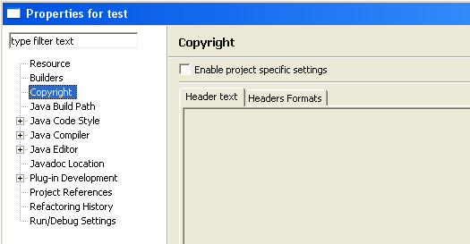

Copyright settings can be defined at the level of each project too, in the project properties. When defined, those settings are applied by default by the copyright wizard.
To define project settings, open the project properties dialog and select the Copyright category. The properties page displayed contains two tabs.
Copyright settings are disabled by default. To enable, select the 'Enable project specific settings' checkbox. When enabled, a popup message is displayed proposing to import in the project settings the header formats definitions of the workspace. If you respond No, you will have to define all the header format, including the root Text content type.

When project settings are selected, the two tabs are enabled:
The project copyright settings are saved in a file stored in the .settings directory of the project. Then this file can be saved in a SCM tool like CVS or Subversion and shared by a team.